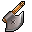
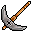
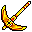
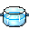

Profissões
Coleta e fabricação: o que aprender, onde coletar e como fabricar, com as regras deste servidor.
1. Coletar
Aprenda uma coleta (corte, mineração, pesca ou resgate) e junte material no mundo.
2. Fabricar
Cada coleta destrava uma fabricação: corte → Manufacturing, mineração → Crafting, pesca → Cooking, resgate → Analyze.
3. Plantas
As plantas (blueprints) caem de monstros e dizem o que fazer e com quais materiais.
Coleta: corte, mineração, pesca e resgate
- Compre o livro da coleta nos mercadores (Jimberry em Argent, Amos em Shaitan, Palpin em Icicle), 1.000 gold cada: Woodcutting, Mining, Fishing, Salvage.
- Cada livro gasta 1 ponto de profissão. Você ganha 1 ponto a cada nível de profissão.
- Corte e mineração pedem ferramenta (nível 10):

Axe e
Pickaxe nos ferreiros Goldie, Smithy e Bash. As versões Gold Axe e
Gold Pickaxe (Store, aba Miscellaneous) rendem o dobro. - Pesca e resgate são de mar: cardumes e naufrágios ficam na água, a maioria só se alcança de barco.
- Clique no recurso com a habilidade, como num monstro. Cada recurso pede um nível mínimo da coleta (tabela abaixo).
Onde coletar (por nível)
| Tipo | Recurso | Nível | Onde | Dá |
|---|---|---|---|---|
| Árvore | Defoliate Pine | 1 | Ascaron (2210, 2655), perto de Argent | Ash Wood Log |
| Árvore | Pine Tree | 1 | Ascaron (1842, 2961) e (1629, 3080) | Wood |
| Árvore | Lavender Core Wood | 2 | Ascaron (569, 2452) | Birch Wood Log |
| Árvore | Tusk Softwood | 3 | Ascaron (2234, 1118) | Teak Wood Log |
| Árvore | Metal Norite | 4 | Forsaken City e Dark Swamp | Cedar Wood Log |
| Árvore | Rue | 5 | Dark Swamp e Demonic World | Rue Wood Log |
| Árvore | Flower Pear | 6 | Deep Blue (3670, 2789) | Red Oak Wood Log |
| Árvore | Fir | 7 | Deep Blue (2695, 2970) | Fir Wood Log |
| Árvore | Jade Sandal | 8 | Pirate Hideout (79, 914) | Maple Wood Log |
| Árvore | Crimson Ceiba / Water Willow | 9–10 | Prison Island | Cherry / Walnut Wood Log |
| Minério | Crystal Ore | 1 | Ascaron (1872, 2695), perto de Argent | Crystal Ore |
| Minério | Iron Ore | 1 | Deep Blue (873, 779) | Crude Iron Ore |
| Minério | Stone Ore | 1 | Magical Ocean (1345, 3174), perto de Shaitan | Energy Ore |
| Minério | Meteorite | 1 | Ascaron (2062, 2692) | Dark Wishing Stone, catalisadores |
| Minério | Bronze Ore | 2 | Deep Blue (2803, 699) | Copper Ore Eolith |
| Minério | Silver Ore | 4 | Magical Ocean (1399, 3074) | minério e às vezes equipamento |
| Minério | Gold Ore | 5 | Dark Swamp | minério e às vezes equipamento |
| Minério | Fascinating Gem / Diamond | 7–8 | Deep Blue (2599, 3039) / Pirate Hideout | gemas brutas |
| Minério | Sorcery Ore / Oceania Meteorite | 9–10 | Prison Island | Black Crystal e mais |
| Peixe | Fish Swarm (e Bountiful) | 1–2 | Mar de Ascaron, Magical Ocean e Deep Blue | Fish Meat, Sashimi |
| Peixe | Dotted Codfish / Clownfish | 1–2 | Magical Ocean (801, 4004) / Deep Blue (1005, 3416) | o próprio peixe |
| Peixe | Squirting Fish | 3 | Sacred War | Squirting Fish |
| Peixe | Moon Tail Eel / Diving Clam / Phoenix Prawn | 4–6 | Forsaken City, Dark Swamp, Pirate Hideout | peixes raros |
| Peixe | Tiger Bone Fish / Pearlie Ratfish | 7–8 | Pirate Hideout | peixes raros |
| Naufrágio | Sunken Ship | 1 | Ascaron (323, 999), Deep Blue, Magical Ocean | seda, porcelana, cristal |
| Naufrágio | Bayside Wreckage | 1 | Pirate Hideout (670, 1119) | Flaw Emerald, corantes, às vezes Refining Gem |
| Naufrágio | Ossein / Coral / Skeletar Ship | 1–3 | Sacred War, Deep Blue (1491, 1979), Magical Ocean (3303, 3517) | ossos e conchas |
| Naufrágio | Shiny Coral / Turtle Shell Ship | 4–5 | Forsaken City, Dark Swamp | Conch, Tortoise Shell |
| Naufrágio | Sharp Skeletar / Sorceror Ship | 8–10 | Pirate Hideout | Sharp Bone, Magical Bone |
Coordenadas do ponto com mais recursos daquele tipo. O drop de coleta está 3x neste servidor.
Fabricação: Manufacturing, Crafting, Cooking e Analyze
- Compre o guia nível 1 da fabricação nos mesmos mercadores (1.000 gold): Manufacturing (pede Woodcutting 1), Crafting (Mining 1), Cooking (Fishing 1) e Analyze (Salvage 1). Gasta 1 ponto de profissão.
- O guia nível 1 entrega a ferramenta da fabricação: Black Hole Crystal (Manufacturing), Anti Matter Crystal (Crafting),

Crystal Cauldron (Cooking) e Particle Crystal (Analyze). - A ferramenta pede uma fada com a habilidade de profissão no nível certo: Pet Manufacturing, Pet Crafting, Pet Cooking e Pet Analyze (Store, aba Fairy → Skills; Novice 20 mil, Standard 60 mil, Expert 150 mil).
- Para subir a fabricação, use os guias do nível 2 ao 10 (2 mil no nível 2 até 50 mil no 10, nos 3 mercadores). O guia de nível N pede a coleta no nível N e a fabricação no N−1.
Plantas (blueprints)
- As plantas caem de monstros em 4 qualidades: Blurry (nível 1), Encrypted (2 a 4), Sealed (4 a 6) e Invocation (6 a 8). A Constellation Blueprint também pode vir na recompensa diária.
- Abrir a planta sorteia o tipo: Manufacturing 40%, Crafting 21% e Cooking 39%, já com o produto e os materiais.
- Com a ferramenta e os materiais na mochila, use a planta na sua fabricação.
Guias pelo Chaos Argent
Os vouchers do Chaos Argent também trocam por guias: no Chaos Administrator (Shaitan e Icicle), 100 Novice Chaos Voucher ou Standard Chaos Voucher dão guias dos níveis 4 e 5. Veja Chaos Argent.